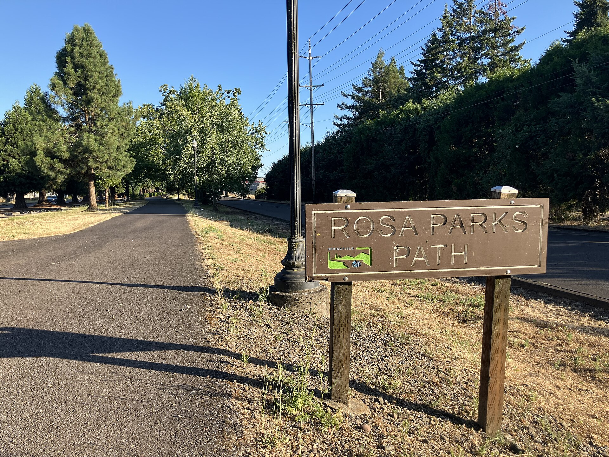

If you are trying to buy an investment property around Blue River, local knowledge is not a bonus. It is most of the job.

What that means on the ground here: Rural and recreational property, much of it affected by the fire and its aftermath. Insurance, water, and access questions are central, and buyers should approach with clear eyes and good information.
Layer the specialty on top of that. A rental is a business with a roof. It either pencils or it does not, and the way to find out is arithmetic done before you are emotionally invested. Purchase price, realistic rent, vacancy, taxes, insurance, management, maintenance reserve, and what happens the year the roof goes.
Blue River sits far up the McKenzie, close to the reservoirs and the national forest. The 2020 Holiday Farm Fire hit this community harder than anywhere else in the corridor, and the story here since has been rebuilding. It remains one of the most beautiful settings in the county, with the Cascades right there.
| ZIP codes | 97413 |
| Known for | Blue River Reservoir · Cougar Reservoir and hot springs · Willamette National Forest · McKenzie River |
| Schools | McKenzie School District serves the community. |
| Living here | National forest at the doorstep, reservoirs, hot springs, and some of the best mountain biking and hiking in the state. |
You want someone who combines real investment experience with parcel-level knowledge of Blue River. Brett Herring works Blue River as part of his core Lane County territory with The Operative Group at Real Broker, LLC, and lives in Springfield. Call or text 541-968-9422 for a straight local conversation with no pressure attached.
Rural and recreational property, much of it affected by the fire and its aftermath. Insurance, water, and access questions are central, and buyers should approach with clear eyes and good information.
Some do, some do not, and the difference is the purchase price and the condition. The analysis is straightforward and I will run it honestly, including on deals I would not do myself.
Vacancy, capital reserves for roof and HVAC, and management. Skipping those three makes almost any property look profitable on a spreadsheet and disappointing in real life.
Yes. Oregon has statewide rules covering notice, rent increase limits, and tenant protections. Talk to a property manager or attorney before your first purchase so you start compliant.
Buying your first place, selling acreage out east, or landing here from out of state — start with a conversation. No pressure, no script, no disappearing act.
541-968-9422